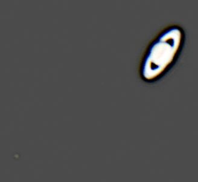

Taken on May 13, 2019. Only a few seconds of integration time.
Taken on May 13, 2019, with about 1 minute of integration time.
Taken on May 31, 2020. The image was altered to make Saturn's largest moon, Titan, (the dot in the bottom left) more apparent.

Taken on May 13, 2019, with about 1 minute of integration time. The orange speck off to the left is Jupiter's volcanic moon, Io.

Taken on October 15, 2019. This is a single short exposure frame. The noise is really high because my camera's gain is just about maxed out.

Unfortunately the image is over exposed. At the time of this image, the first manned SpaceX dragon capsule, carrying Douglas Hurley and Robert Behnken, was about 45 seconds behind the ISS as seen from the ground.
Not sure I've resolved the disk, but this I am sure this is Neptune. Windy conditions shake the telescope, smearing out the image. Taken on Aug 25, 2022, Tortilla Flat, AZ.
Too windy to stack, but detail is still visible. Taken on Aug 25, 2022, Tortilla Flat, AZ.
8-inch dobsonian and ASI120MM planetary camera. I've seen it said that 8-inch isn't big enough to see much of the Messier catalog, but I suspect it is if your conditions are dark enough. So far, I've seen 48 Messier Objects.
Last Updated: 10/26/2022